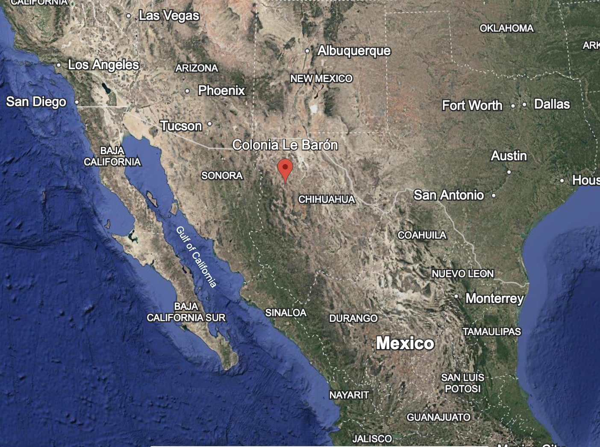

Geogrphy of Colonia LeBaron
Colonia LeBarón is a small rural settlement located in northern Mexico, in the municipality of Galeana in the state of Chihuahua. It sits within a broad, high-desert valley near the Sierra Madre Occidental mountain range, giving the area a mix of open plains and distant rugged terrain. The elevation contributes to a semi-arid climate, with hot summers, cool winters, and relatively low annual rainfall.
The landscape around Colonia LeBarón is characterized by wide agricultural fields, scrubland, and scattered vegetation typical of desert environments, such as grasses, mesquite, and small shrubs. Irrigation is essential for farming, and the community relies on groundwater and seasonal water sources to sustain crops like apples, nuts, and forage.
Nearby, the Bavispe River plays an important role in the region’s geography, running through parts of the surrounding area and supporting limited agriculture and wildlife. Dirt roads and a few paved routes connect the colony to neighboring towns, but the region remains relatively isolated, with long distances between settlements.
Overall, Colonia LeBarón’s geography is defined by its remote desert setting, agricultural adaptation, and proximity to mountainous terrain, shaping both the lifestyle and challenges of the people who live there.
Brief Summary on the LeBaron Town History
La Colonia LeBaron is located in Chihuahua, Mexico, and is home to the Lebaron Family. The LeBaron family has French and English roots, and the earliest movement made by them was seen in the late 1840s in Utah. They were part of the early LDS community, and later went on to move to Mexico once poligamy became illegal. They moved to Mexico mainly for the purpose of continuing their poligamy practices, and they established said goal by starting a town.
As the town grew there started to more and more conflict within the group, and many of the younger generations started to speak out. Among the conflict arose many different beliefs and the divide between the family increased over time. Some of the fighting did end up getting ugly and there were even some murders involved. Right now LeBaron does not have as much violence as it used to have, but there is definitely still a divide.